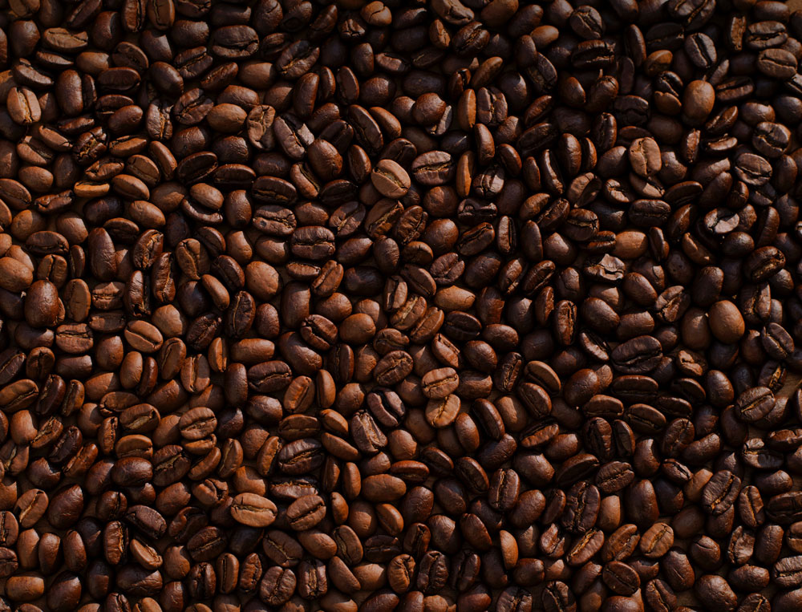

Coffee101
Do you like drinking coffee? If you love drinking coffee as I do, you must want to learn more about these magic beans.
Where is coffee bean come from?
A coffee bean is a seed of the coffee plant and the source for coffee. It is the pit inside the red or purple fruit often referred to as a cherry. Just like ordinary cherries, the coffee fruit is also a so-called stone fruit. Even though the coffee beans are seeds, they are referred to as "beans" because of their resemblance to true beans. The fruits – coffee cherries or coffee berries – most commonly contain two stones with their flat sides together. A small percentage of cherries contain a single seed, instead of the usual two. This is called a "peaberry". The peaberry occurs only between 10 and 15% of the time, and it is a fairly common (yet scientifically unproven) belief that they have more flavour than normal coffee beans. Like Brazil nuts (a seed) and white rice, coffee beans consist mostly of endosperm.
| Country | Production (tonnes) |
|---|---|
| Brazil | 3,019,051 |
| Vietnam | 1,460,800 |
| Colombia | 745,084 |
| Indonesia | 639,305 |
| Ethiopia | 469,091 |
| World | 9,221,534 |
How To Brew Coffee At Home
- Rinse the filter with hot water and toss the rinsing water
- Measure a tablespoon of coffee for each cup of coffee you want to make
- Grind your coffee on a medium, sand-like grind
- Wet the grounds with a little water and wait for at least 30 seconds (longer if your beans are very fresh)
- Pour half of the remaining water over a 30-second duration
- Pour the rest of the water in three or four smaller increments